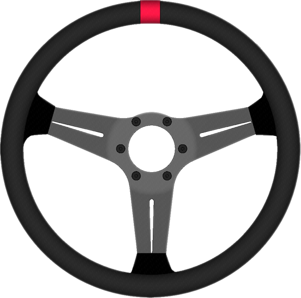

Principal
Ângulo540°
0°

Bruto: 1023Convertido: 1023
Acelerador
Freio
Force Feedback
Efeito fora do jogoDesligado
Câmbio
Movimento X/Y · configure cada marcha
Y maxY min
X : —Y : —
X min X max
Coloque a alavanca em cada marcha e clique no quadrado correspondente.